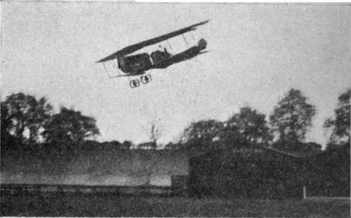

Flying Machines Of To-Day. Part 5
Description
This section is from the book "All About Flying", by Gertrude Bacon. Also available from Amazon: All About Flying.
Flying Machines Of To-Day. Part 5
Late in the day to enter the field, but soon forging rapidly to the very forefront by force of brains and enterprise, Germany prepared for the Great War the mightiest fleet of flying machines ever seen. Experts have estimated the number at 1300, of which more than half were the renowned 'Taubes' monoplanes whose rounded wings with turned-up tips suggest the doves or pigeons they take their names from. Built all of steel, painted blue to fade into the sky, they owe their origin to the famous Austrian constructor Etrich, who was helped to his design by study of the Zanonia leaf, one of Nature's own gliders. The speed of a Taube is 60 miles an hour, but war experience demands a faster, and more especially, a faster climbing craft, and latterly tractor biplanes, 'Aviatik,' 'Albatros,' 'D.F.W.,' and others have proved superior. German aeroplanes are big and heavy, but singularly efficient and well-engined. Built for the most part with backward sloping 'arrow form 'planes of the Dunne and Handley Page type, they aim particularly at stability; while the German engines—the famous Mercedes in particular—are unsurpassed. It has been well for us that the German temperament does not conduce, apparently, to the production of pilots of a quality to match their aeroplanes and engine-power.
( The Aeroplane)
(The Aeroplane)
German 'D.F.W.' Biplanes.
The problem of the hydro-aeroplane, the flying machine which shall rise from and alight on the surface of the water, engaged the attention of certain minds at a very early stage in the history of flight ; indeed some of the first pioneers, such as Langley in America and Bleriot and Voisin in France, made experiments over and on (and frequently 'in') water with their craft before ever they succeeded in getting them off the land. The advantages of having a big lake, or the sea itself, for a flying ' ground' (pardon the word) are manifest. The naval possibilities for sea-planes are enormous. The matter is all-important as well as specially fascinating, and recently it has assumed ever larger proportions and absorbed more and more of the best brains in the world of aviation.
And it is by no means an easy task. Merely to fit floats instead of wheels to an ordinary aeroplane does not convert it into a practicable hydro-aeroplane (popularly known as a 'water-plane' or a 'seaplane '), nor does it enable it to rise off the water. To run a flying machine on wheels along smooth ground sufficiently quickly to make it lift, takes, as we know, more power than to keep it flying in the air. When it comes to forcing heavily laden, awkward-shaped floats, at great speed, through a more or less yielding fluid such as water, so much increasing resistance may be set up as may effectually keep the machine from ever lifting at all.
Then again the presence of big, heavy floats, slung below the planes, instead of a light compact chassis, alters the whole question of the balance of the machine, puts the centre of gravity in another place, and tends to set up a sort of pendulum effect which it has ever been the object of the aviator to avoid. Construction, design, distribution of weights and surfaces, must all be reconsidered by the aeroplane builder who wishes to give his bird webbed feet.
And when it is a sea-bird he desires to evolve the matter becomes yet more difficult. Enormous strength must be given to withstand the buffeting of the waves. Increased strength means increased weight, which in turn means bigger floats, and bigger floats spell greater resistance. Contrary to general opinion, water can be extremely hard—hard as concrete or granite to land upon—and except in sheltered harbours or land-locked bays a descent on sea is much rougher than on land. As one aviator complained, ' water is so soft at low speeds, and so exceedingly hard at high ! 'Then again the launching of craft on the uneasy waves may be, in itself, a tremendous business. Altogether the problem is a vast one, and, perhaps for this very reason, has a fascination all its own.
One great point is the devising of a float which shall readily leave the water. A well-designed float will tend, as the speed increases, to lift of itself and skim over the surface instead of ploughing heavily through the waves. Some forty years ago and more a Sussex clergyman of the name of Ramus conceived and laid before the Admiralty a marvellous invention, whereby the speed of a battleship might be vastly increased by making the hull of two wedge-shaped bodies, one abaft the other, which should tend to lift it out of the water when travelling at high speed. The whole plan (which included rockets in its scheme) was impracticable, but it contained the germ of what is known as the ' hydroplane'—an object, boat or float, of such a shape that, when propelled rapidly along, wedges itself out of the water and skims lightly along the top. Hydroplane racing motor-boats have been in existence for some while, and hydroplane floats are fitted to many water-planes.
(It will be seen from the foregoing that those who call a hydro-aeroplane a 'hydroplane' err in so doing.)
One of the peculiarities of the hydroplane float is that it is 'stepped'—that is to say, the lower surface, instead of being all of one piece, changes or ' steps' abruptly to another level. Some floats have one step, some more. Their main object is to help the float to become 'unstuck.' There is a great tendency for water to hold on to an object lying flat upon it. Lay the palm of your hand flat on the water and feel the resistance offered when you lift it straight upwards. The step allows the air to come in underneath the under surface of the float, and so does away with this suction effect; and the float 'unsticks' (the French verb is decoller) readily. Many experts, however, declare that the same effect can be got without the awkward steps (which add to the trouble of construction), and so these have, in many cases, been abandoned.
Continue to: